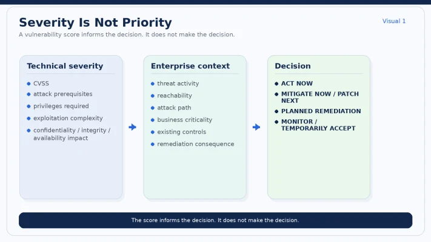
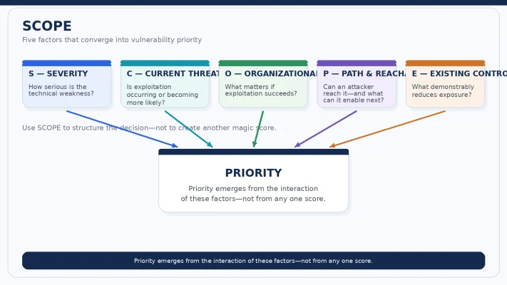
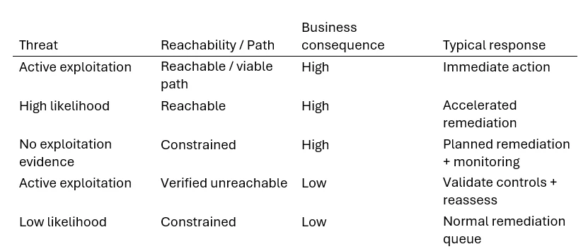
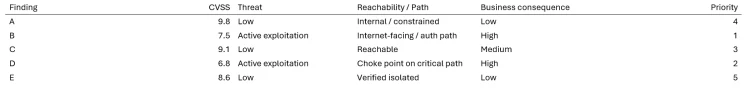

Severity describes the weakness. Context establishes the exposure. Leadership sets the priority.
Your vulnerability team walks into the Monday review with two findings.
There is one engineering team available today.
Vulnerability A
CVSS 10.0
Internal system. Segmented. Authentication required. No evidence, in this hypothetical scenario, of active exploitation.
Vulnerability B
CVSS 7.x
Internet-facing. Part of customer authentication. Credible evidence of exploitation in the wild. And if exploitation succeeds, the attacker gains a useful foothold toward systems the business considers important.
Which one goes first?
If the answer is automatically:
“10.0. Obviously.”
then I think we have exposed one of the most persistent problems in vulnerability management.
We have confused severity with priority.
They are related.
They are not the same thing.
CVSS is not the problem
I want to be careful here, because criticizing CVSS has become fashionable.
That is not my argument.
The Common Vulnerability Scoring System gives the industry a standardized way to communicate characteristics associated with vulnerability severity.
That is genuinely useful.
Without a common language, scanners, vendors and organizations could describe the same technical weakness differently.
The operational problem begins when a useful technical signal quietly becomes a work queue.
10.0?
Emergency.
9.8?
Critical.
7.5?
Later.
5.3?
Much later.
Eventually we start asking one number to answer a much larger question:
How much does this vulnerability matter to my enterprise right now?
That is not the same question.
And CVSS itself has evolved in this direction.
FIRST’s CVSS v4.0 separates Base, Threat, Environmental and Supplemental metric concepts rather than pretending that a single Base score contains all relevant context.
So the lesson is not:
Stop using CVSS.
It is:
Stop expecting CVSS alone to make an enterprise risk decision.
Different signals answer different questions
This distinction matters because vulnerability teams now have several useful signals available to them.
CVSS
How severe are the technical characteristics of the vulnerability under the scoring framework?
EPSS
What is the estimated probability that the published vulnerability will be exploited in the wild over the model’s prediction period?
CISA KEV
Is there evidence that this vulnerability has actually been exploited in the wild?
Asset context
What does the affected system mean to us?
Reachability
Can an attacker actually reach the vulnerable condition in our implementation?
Attack path
If exploitation succeeds, what does it enable next?
Business consequence
What happens to customers, revenue, operations, data, safety or regulatory obligations if the attack succeeds?
None of these replaces the others.
That is precisely the point.
Severity is a property of the vulnerability. Priority is a decision made by the enterprise.
I would put that sentence above every vulnerability dashboard.

Why severity-based SLAs remain popular
A lot of programs still run something like:
Critical → 15 days
High → 30 days
Medium → 60 or 90 days
There is a reason.
It is simple.
Everyone understands it.
It creates an enforceable baseline.
And for an organization with relatively low vulnerability-management maturity, basic severity-led discipline may be significantly better than no discipline at all.
I would not dismiss that.
The model starts struggling when scale and context arrive.
Because it implicitly assumes that vulnerabilities inside the same severity band deserve roughly the same urgency.
Real environments are rarely that tidy.
A CVSS 9.8 vulnerability on an isolated test service and a CVSS 7.5 vulnerability actively exploited against an internet-facing authentication path are not necessarily competing for remediation on equal terms.
The score starts the conversation.
Context determines the decision.
But context is not only about the affected asset
This is where a comment on Article 1 sharpened the discussion for me.
We often analyze vulnerabilities one at a time.
Attackers do not necessarily operate that way.
A vulnerability that looks moderate in isolation can become far more consequential when it enables the next step in a chain:
initial access,
credential theft,
privilege escalation,
lateral movement,
access to a management plane,
or a path toward a high-value application.
So the question is not only:
“How severe is this vulnerability?”
It is also:
“What does this enable?”
And sometimes:
“How many meaningful attack paths depend on this condition?”
This is where vulnerability management starts to merge with architecture.
Imagine five possible attack paths toward a critical business service.
All five pass through the same identity tier.
Or the same remote-management interface.
Or the same highly privileged service account.
Or the same network boundary.
That node may be a far more valuable remediation target than several individually higher-scoring vulnerabilities elsewhere.
Which raises a question I think this series will return to repeatedly:
If I can only make five security changes this quarter, which five eliminate the greatest number of consequential attack paths?
That is a genuinely different way to allocate remediation capacity.
It is why I increasingly distinguish between:
vulnerability reduction
and
attack-path destruction.
Reducing vulnerability count is useful.
Breaking the paths an attacker actually needs may be more useful still.
Research has been pointing in this direction for years
This is not simply an exposure-management marketing argument.
Allodi and Massacci compared vulnerability severity with evidence of real-world exploitation and challenged the assumption that severity alone maps neatly to attacker behaviour.
Bozorgi and colleagues explored exploit prediction using signals beyond static severity.
Sabottke, Suciu and Dumitraș examined external information for predicting exploitation.
EPSS later operationalized exploit prediction at scale.
Research on attack graphs and vulnerability chains goes a step further by examining how weaknesses and system relationships combine into attack paths.
Recent work continues in that direction.
Shimizu and Hashimoto’s vulnerability-management chaining framework combines multiple vulnerability signals instead of treating one score as sufficient.
Baiardi, Sammartino and Ruggieri go further by examining the position of vulnerability severity along attack paths. Their analysis shows that adversary success can change depending not merely on which vulnerability scores exist, but on where those scores appear along the path.
That is an important distinction.
A vulnerability’s position in the architecture can matter as much as the score attached to the individual node.
None of this says CVSS is useless.
It says almost the opposite:
CVSS becomes more useful when we stop asking it to do everyone else’s job.
The CISO’s real problem is portfolio allocation
A CISO does not have infinite remediation capacity.
Neither does engineering.
Production has change windows.
Products have roadmaps.
Platforms have dependencies.
Some fixes are straightforward.
Others introduce real availability risk.
Some require version upgrades.
Some require architecture changes.
Some require replacing technology altogether.
So vulnerability prioritization is ultimately a form of portfolio allocation.
You are deciding where limited organizational capacity will produce the greatest reduction in consequential exposure.
That reframes the question.
Instead of:
Which vulnerability has the highest score?
ask:
Which available intervention gives us the greatest meaningful risk reduction now?
And once attack paths enter the picture:
Which intervention removes the most consequential exposure—or breaks the most dangerous paths—for the effort and operational risk involved?
That is much closer to the decision executives actually need to make.
SCOPE: how the DECIDE step gets done
Article 1 introduced:
FIND → OWN → DECIDE → ACT → VERIFY
SCOPE sits inside DECIDE.
It is not another vulnerability-scoring system.
It is a forcing function.
A way to stop the conversation from ending with:
“What’s the CVSS?”
S — Severity
What can the technical weakness do?
Look at:
· attack vector;
· exploitation complexity;
· privileges required;
· confidentiality impact;
· integrity impact;
· availability impact.
Severity still matters.
We are not replacing it.
C — Current Threat
What is happening outside our environment?
Ask:
· Is exploitation known?
· Is the vulnerability in KEV (known exploit vulnerability catalog)?
· What does EPSS indicate?
· Is reliable exploit code available?
· Are threat actors relevant to us using it?
· Has the threat picture materially changed?
A vulnerability can become far more urgent while its CVSS score remains exactly the same.
The vulnerability did not change.
The threat environment did.
O — Organizational Consequence
What happens to us if exploitation succeeds?
Ask:
· Which business capability depends on this?
· Which customers are affected?
· What data is accessible?
· What revenue or operational capability is involved?
· What regulatory or contractual obligations matter?
· Is this Tier-0 or Tier-1 technology?
· Could the outcome affect safety, trust or material operations?
Two companies can run the same vulnerable software and face completely different consequences.
Sometimes two deployments inside the same company can too.
P — Path & Reachability
Can an attacker reach it—and what does it enable next?
Ask:
· Is the system internet-facing?
· Is the vulnerable code path reachable?
· What authentication is required?
· What privilege does exploitation provide?
· What network or identity boundaries follow?
· Can the weakness be chained with another vulnerability?
· Does it lead toward a critical asset?
· Does it sit at a choke point shared by several attack paths?
This is where the question changes from:
“Is this CVE dangerous?”
to:
“What role does this weakness play in the architecture an attacker would actually traverse?”
A Medium vulnerability at a strategically important point in a chain may deserve more attention than an isolated Critical vulnerability with little onward path.
Not always.
But often enough that we should ask.
E — Existing Controls
What genuinely reduces exposure today?
Consider:
· segmentation;
· authentication;
· WAF or filtering;
· privilege boundaries;
· EDR;
· sandboxing;
· application isolation;
· monitoring;
· feature disablement;
· egress restrictions.
And then ask the more important question:
Do we have evidence the control actually works against the relevant attack path?
A compensating control should be evidence.
Not optimism.

Do not turn SCOPE into another magic number
This is important.
The natural instinct is to score each letter.
Severity = 9
Threat = 8
Consequence = 10
Path = 7
Controls = 4
Then multiply.
Divide by something.
Produce:
Risk = 7.43
Now we have a number with two decimal places.
We do not necessarily have better truth.
Quantification can be useful when the underlying assumptions and data justify it.
But uncertain judgments do not automatically become reliable simply because the output looks precise.
For many organizations, a decision matrix is a better starting point.

This is deliberately simplified.
Real decisions require more context.
But notice what happened.
CVSS did not disappear.
It became one input into the decision.
Exactly where it belongs.
Four outcomes—not one patch queue
I would want vulnerability reviews to end in one of four explicit outcomes.
1. REMEDIATE NOW
Use when the combination of threat, reachability, path and consequence justifies immediate engineering action.
For example:
active exploitation,
external exposure,
meaningful business consequence,
or controls that do not hold up.
2. MITIGATE NOW, REMEDIATE NEXT
This option deserves far more attention.
Sometimes permanent remediation cannot happen safely today.
That does not mean exposure has to remain unchanged.
Possible actions include:
restricting access,
disabling vulnerable functionality,
isolating a service,
reducing privilege,
breaking a network path,
tightening an identity boundary,
adding temporary controls,
or increasing detection while permanent remediation is prepared.
This closes the false choice between:
Patch immediately
and
Accept the risk.
3. BREAK THE PATH
This is the architectural option.
Sometimes the highest-value intervention is not the vulnerability itself.
It may be:
removing a trust relationship,
segmenting a management interface,
changing privilege,
isolating a tier,
removing a shared credential,
or controlling a choke point that several attack paths depend on.
One architectural change can sometimes reduce the usefulness of several vulnerabilities at once.
That is why vulnerability management should not operate separately from architecture.
4. PLANNED REMEDIATION / EXPLICIT TEMPORARY ACCEPTANCE
For genuinely constrained or lower-consequence exposure, immediate disruption may not be rational.
But this still needs:
an owner,
a rationale,
a target date,
monitoring,
and a trigger for reassessment.
If exploitation becomes known?
Reassess.
If reachability changes?
Reassess.
If the system becomes business critical?
Reassess.
Risk acceptance should not be a permanent status.
It should be a conditional decision.
And one name should sit behind every decision
SCOPE helps determine which response fits.
It does not tell us who is authorized to make the call.
That comes from Article 1:
technical ownership,
business-service ownership,
and residual-risk ownership.
If the decision is:
Temporarily accept.
I want to know who accepted it.
If the decision is:
Patch now despite the outage risk.
I want to know who accepted the operational consequence.
If the decision is:
Break this network path instead.
I want to know who owns implementation and verification.
A well-prioritized vulnerability without accountable ownership is still only a well-organized opinion.
Priority is not assigned once
Most programs set urgency when a finding is created.
Then the clock starts.
But context keeps moving.
Day 1:
No exploitation.
Day 4:
A proof of concept appears.
Day 8:
Threat activity increases.
Day 12:
The vulnerability enters KEV.
Or the opposite happens.
The service moves behind a new boundary.
A vulnerable feature is disabled.
A compensating control is validated.
The application is scheduled for retirement.
The CVSS score may not change.
The enterprise priority can.
Prioritization should therefore not be a one-time classification event.
It should change when material evidence changes.
Static SLAs become uncomfortable in both directions
Policy says:
Critical = 30 days.
A Critical vulnerability becomes actively exploited on Day 3.
Should the team still have another 27 days simply because the SLA allows it?
Clearly not.
Now reverse the situation.
A Critical vulnerability sits on a tightly constrained system due to be retired in six weeks.
Permanent remediation requires a risky production change.
A validated control blocks the relevant attack path.
Should leadership force the change on Day 30 purely to preserve the metric?
Maybe.
Maybe not.
The point is not that SLAs are bad.
It is:
Decision first. Metric second.
We will come back to that separately.
What I would ask my vulnerability team
If a dashboard shows me 1,000 Critical findings, my first question is not:
“Why haven’t you fixed all 1,000?”
I would ask:
How many are known to be exploited?
How many are externally reachable?
How many affect critical business services?
How many sit on viable attack paths toward high-value assets?
Which systems are choke points shared by multiple paths?
How many are constrained by controls we have actually tested?
How many remain open because nobody owns them?
How many cannot move without real operational impact?
Now we have a management problem we can actually solve.
The Monday-morning exercise
Take your 20 highest-severity open findings.
Do not change their CVSS scores.
Add these columns:
Current threat
Business consequence
Reachability
Attack-path role
Existing controls
Owner
Then re-rank them.

These are intentionally hypothetical examples.
The point is the ordering.
If your real ranking changes materially once threat, path and consequence are added, the organization has learned something important:
Your vulnerability queue and your risk queue were never the same queue.
The scanner was not wrong.
It was answering a different question.
AI will make this distinction non-optional
Article 1 asked:
What happens when AI finds vulnerabilities faster than organizations can fix them?
Article 2 adds the second half:
What happens when AI increases the number of credible findings?
An enterprise facing:
traditional scanner findings,
SAST and SCA,
cloud misconfiguration,
attack-surface changes,
new dependencies,
AI-assisted code findings,
and continuously changing threat intelligence
cannot scale severity-only prioritization indefinitely.
The vulnerability platform of the near future needs to become less like:
a sorted inventory of weaknesses
and more like:
a continuously updated decision system.
The harder AI problem may eventually stop being:
“Can you find another vulnerability?”
and become:
“Can you explain why this vulnerability matters to this enterprise now, what it enables in the attack path, and which intervention is actually defensible?”
Harder question.
Much more valuable one.
Five questions before I would approve the priority list
1.
Are we ranking vulnerability severity—or enterprise exposure?
2.
Which findings have evidence of active or probable exploitation?
3.
Which are actually reachable in our architecture?
4.
Which sit on consequential attack paths or critical choke points?
5.
Which available intervention removes the most consequential exposure for the engineering effort and operational risk involved?
That last question is where vulnerability management turns into leadership.
My position
CVSS is valuable.
So are EPSS, KEV, threat intelligence, reachability analysis, attack-path analysis and business context.
The mistake is looking for any one of them to become the answer.
There is no universal number that tells every company what to fix first.
The enterprise still has to decide.
So the objective is not to replace CVSS.
It is to put CVSS back into its proper role:
an important input into prioritization—not a substitute for prioritization.
I would summarize Article 2 this way:
Severity describes the weakness.
Threat tells us whether adversaries care.
Architecture tells us what the weakness enables.
Business context tells us what success would cost us.
Leadership decides what happens next.
That is the distinction vulnerability management needs.
Monday-morning takeaway
Take your twenty highest-severity findings.
Run them through:
SCOPE
Severity
Current Threat
Organizational Consequence
Path & Reachability
Existing Controls
Then add one final question:
Does this weakness sit on—or help create—a consequential attack path?
Reorder the queue.
Wherever the order changes, that is where your real vulnerability-management conversation should begin.
Next in the series
Patch Everything Is Not a Security Strategy
When should a CISO:
patch,
mitigate,
break the attack path,
isolate,
replace,
or consciously wait?
And how do you create those options without turning risk acceptance into a loophole for permanent exposure?
References & further reading
FIRST. Common Vulnerability Scoring System Version 4.0. https://www.first.org/cvss/v4.0/
Jacobs, J., Romanosky, S., Edwards, B., Adjerid, I., & Baker, W. (2021). Exploit Prediction Scoring System (EPSS). Digital Threats: Research and Practice, 2(3). https://doi.org/10.1145/3436242
FIRST. Exploit Prediction Scoring System (EPSS). https://www.first.org/epss/
Cybersecurity and Infrastructure Security Agency. Known Exploited Vulnerabilities Catalog. https://www.cisa.gov/known-exploited-vulnerabilities-catalog
Allodi, L., & Massacci, F. (2014). Comparing Vulnerability Severity and Exploits Using Case-Control Studies. ACM Transactions on Information and System Security, 17(1). https://doi.org/10.1145/2630069
Bozorgi, M., Saul, L. K., Savage, S., & Voelker, G. M. (2010). Beyond Heuristics: Learning to Classify Vulnerabilities and Predict Exploits. ACM SIGKDD. https://dl.acm.org/doi/10.1145/1835804.1835821
Sabottke, C., Suciu, O., & Dumitraș, T. (2015). Vulnerability Disclosure in the Age of Social Media: Exploiting Twitter for Predicting Real-World Exploits. USENIX Security Symposium. https://www.usenix.org/conference/usenixsecurity15/technical-sessions/presentation/sabottke
Howland, H. (2023). CVSS: Ubiquitous and Broken. Digital Threats: Research and Practice. https://doi.org/10.1145/3491263
Souppaya, M., & Scarfone, K. (2022). Guide to Enterprise Patch Management Planning. NIST SP 800-40 Rev. 4. https://nvlpubs.nist.gov/nistpubs/SpecialPublications/NIST.SP.800-40r4.pdf
Shimizu, N., & Hashimoto, M. (2026). Vulnerability Management Chaining: An Integrated Framework for Efficient Cybersecurity Risk Prioritization. IEEE Access, 14, 31407–31424.
Baiardi, F. E. E., Sammartino, V., & Ruggieri, S. (2026). Quantifying the Impact of CVSS Score Ordering on Attack Paths. https://arpi.unipi.it/handle/11568/1349767